vignettes/crp2a.Rmd
crp2a.Rmd# Import CNF files for calibration
# Skip the 30 first chanels
crp2a_cnf <- system.file("extdata/crp2a/", package = "gamma")
crp2a_spc <- read(crp2a_cnf, skip = TRUE)
crp2a_spc
#> A collection of 8 gamma spectra: BDF, BRIQUE, C341, C347, GOU, LMP, MAZ, PEP
# Select 'BRIQUE', 'C341', 'C347', 'GOU', 'LMP', 'MAZ' and 'PEP' to build the curve
crp2a_calib <- crp2a_spc[c("BRIQUE", "C341", "C347", "GOU", "LMP", "MAZ", "PEP")]
# Select 'BDF' spectra for background noise measurement
crp2a_noise <- crp2a_spc[["BDF"]]# Plot spectra
plot(crp2a_calib, yaxis = "rate") +
ggplot2::geom_vline(xintercept = c(238, 1461, 2614.5), linetype = 3) +
ggplot2::labs(x = "Energy [keV]", y = "Count rate [1/s]") +
ggplot2::theme_bw()
plot(crp2a_noise, yaxis = "rate") +
ggplot2::geom_vline(xintercept = c(238, 1461, 2614.5), linetype = 3) +
ggplot2::labs(x = "Energy [keV]", y = "Count rate [1/s]") +
ggplot2::theme_bw()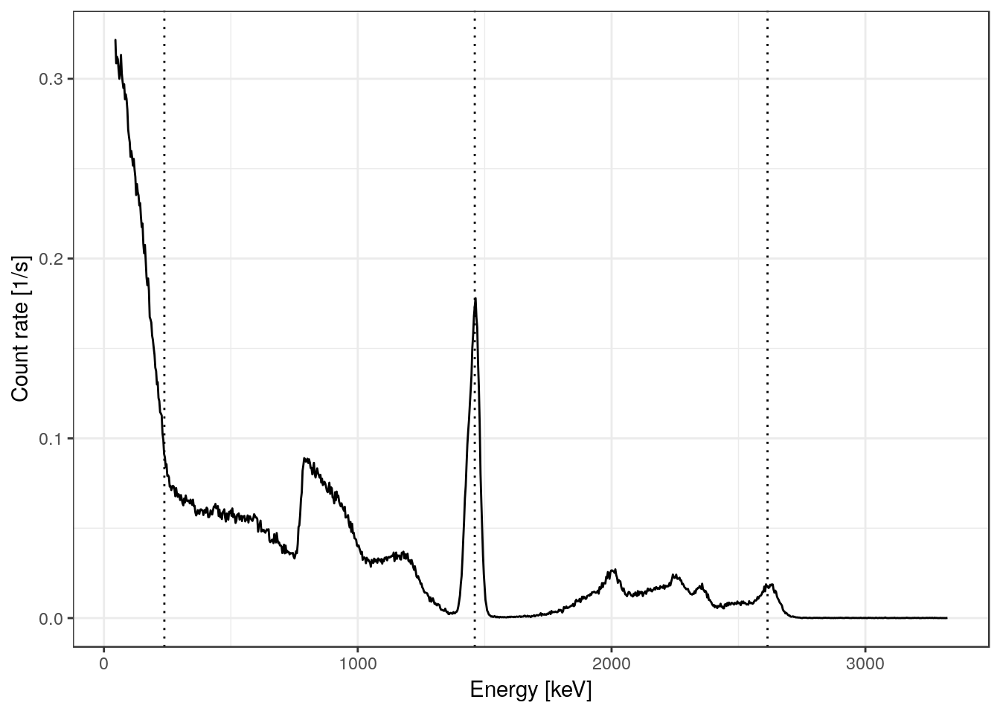
# Remove base line
calib_clean <- removeBaseline(crp2a_calib)
plot(calib_clean, yaxis = "rate", facet = TRUE) +
ggplot2::geom_vline(xintercept = c(238, 1461, 2614.5), linetype = 3) +
ggplot2::labs(x = "Energy [keV]", y = "Count rate [1/s]") +
ggplot2::theme_bw()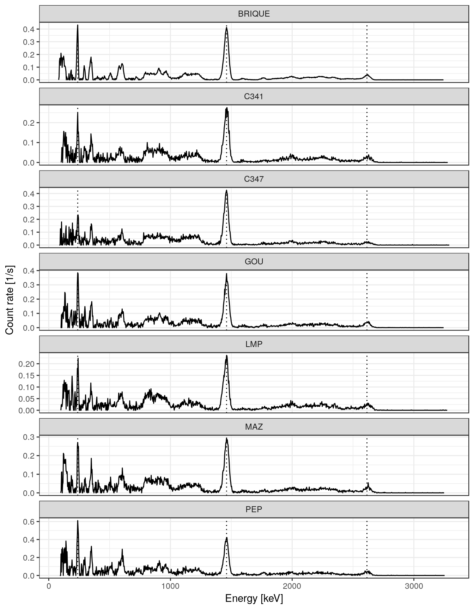
# Remove base line
noise_clean <- removeBaseline(crp2a_noise, LLS = TRUE, k = 10)
plot(noise_clean, yaxis = "rate") +
ggplot2::geom_vline(xintercept = c(238, 1461, 2614.5), linetype = 3) +
ggplot2::labs(x = "Energy [keV]", y = "Count rate [1/s]") +
ggplot2::theme_bw()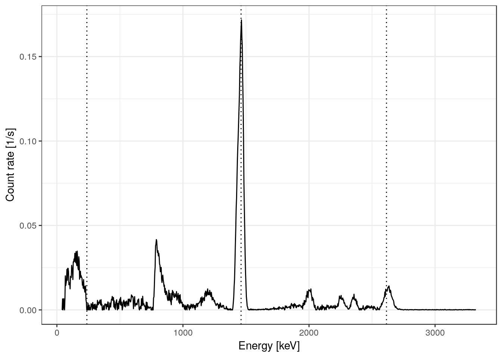
# Fit peaks at 238, 1461, 2614.5 keV (starting positions)
calib_peaks <- lapply(X = crp2a_calib, FUN = fitPeaks,
peaks = c(238, 1461, 2614.5), scale = "energy",
bound = c(0.5, 0.5, 0.5))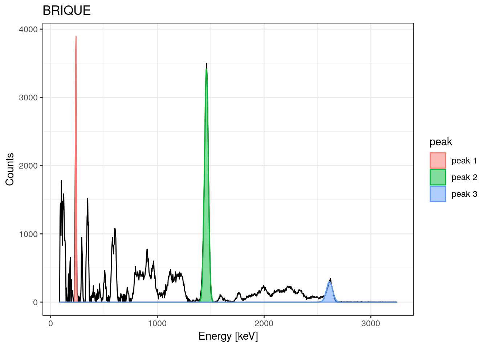
| Chanel | Energy [keV] | Count | Count rate [1/s] | Energy error [%] |
|---|---|---|---|---|
| 76 | 238.000 | 3661.000 | 0.432 | 0.000 |
| 465 | 1461.000 | 3498.500 | 0.413 | 0.000 |
| 827 | 2611.804 | 316.266 | 0.037 | -0.103 |
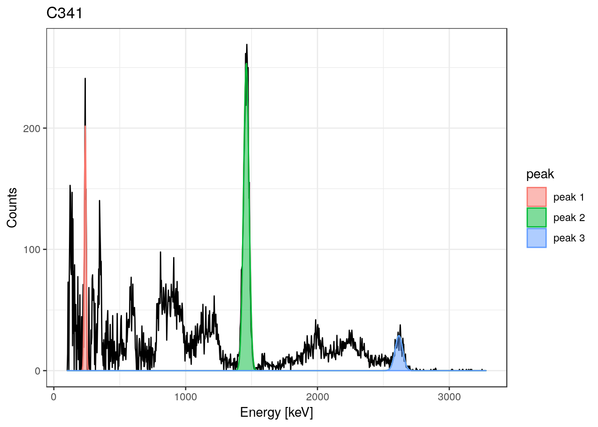
| Chanel | Energy [keV] | Count | Count rate [1/s] | Energy error [%] |
|---|---|---|---|---|
| 75 | 238.000 | 241.000 | 0.247 | 0.000 |
| 464 | 1461.000 | 254.938 | 0.261 | 0.000 |
| 823 | 2618.262 | 16.713 | 0.017 | 0.144 |
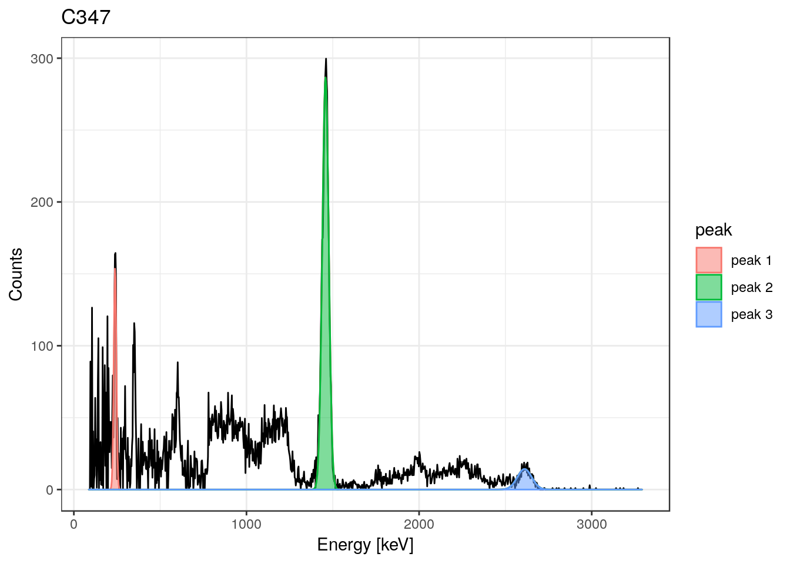
| Chanel | Energy [keV] | Count | Count rate [1/s] | Energy error [%] |
|---|---|---|---|---|
| 75 | 238.000 | 163.500 | 0.232 | 0.000 |
| 463 | 1457.805 | 290.642 | 0.413 | -0.219 |
| 819 | 2611.712 | 13.751 | 0.020 | -0.107 |
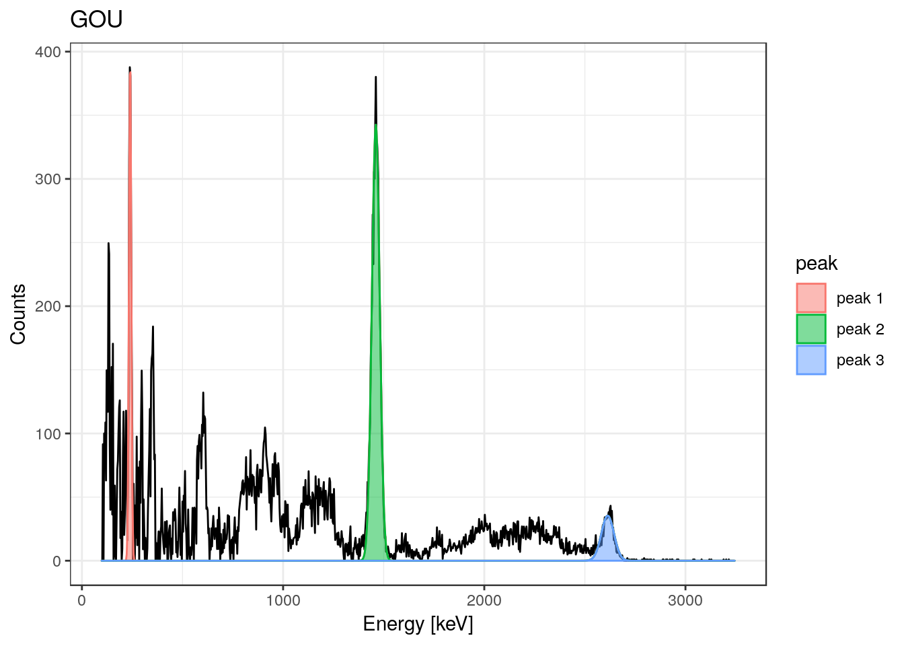
| Chanel | Energy [keV] | Count | Count rate [1/s] | Energy error [%] |
|---|---|---|---|---|
| 76 | 241.114 | 380.750 | 0.378 | 1.308 |
| 465 | 1461.000 | 380.161 | 0.377 | 0.000 |
| 827 | 2611.800 | 35.147 | 0.035 | -0.103 |
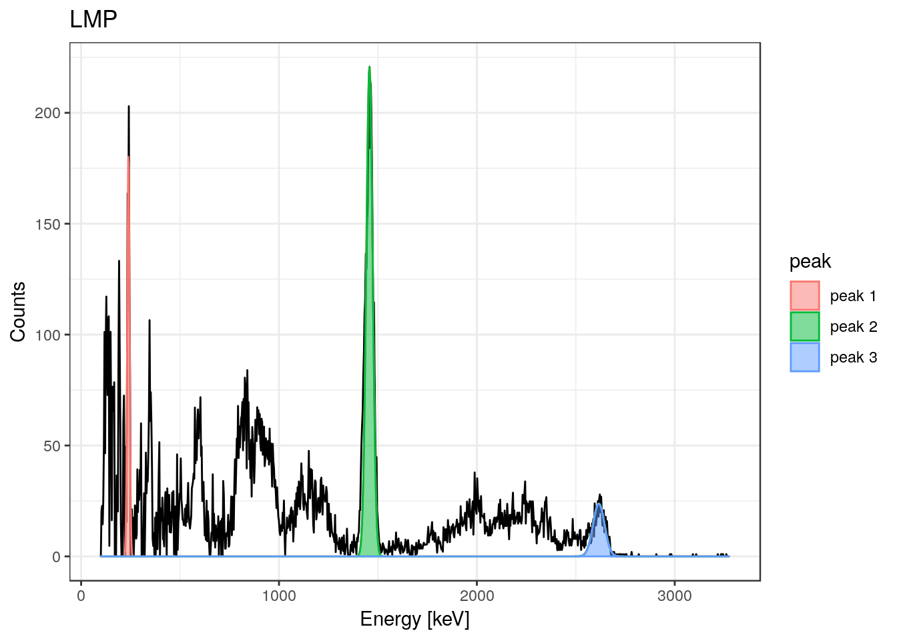
| Chanel | Energy [keV] | Count | Count rate [1/s] | Energy error [%] |
|---|---|---|---|---|
| 75 | 238.000 | 140.250 | 0.154 | 0.000 |
| 465 | 1457.822 | 184.126 | 0.203 | -0.217 |
| 824 | 2615.000 | 17.913 | 0.020 | 0.019 |
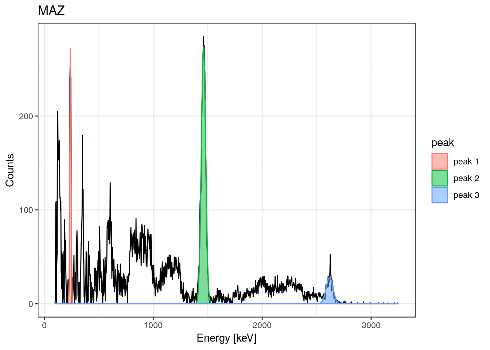
| Chanel | Energy [keV] | Count | Count rate [1/s] | Energy error [%] |
|---|---|---|---|---|
| 76 | 241.097 | 231.500 | 0.240 | 1.301 |
| 466 | 1461.000 | 284.741 | 0.295 | 0.000 |
| 829 | 2618.217 | 23.529 | 0.024 | 0.142 |
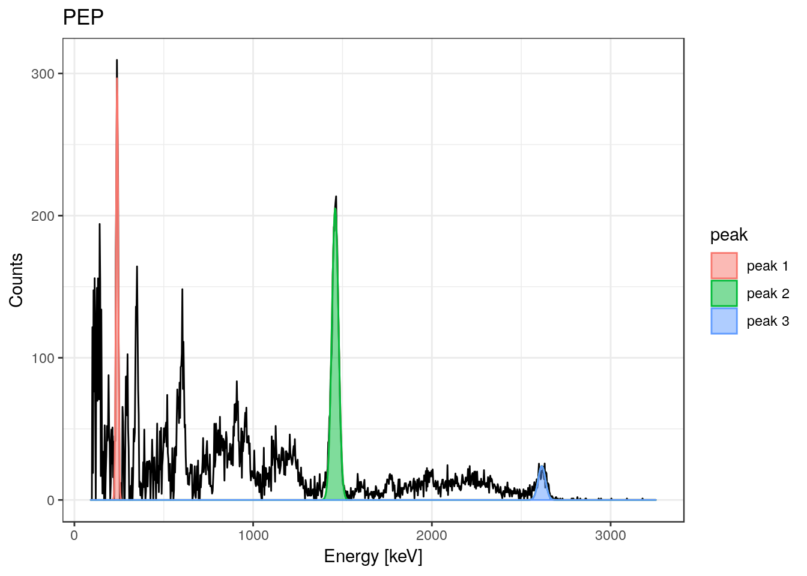
| Chanel | Energy [keV] | Count | Count rate [1/s] | Energy error [%] |
|---|---|---|---|---|
| 75 | 238.000 | 309.500 | 0.610 | 0.000 |
| 463 | 1457.833 | 204.410 | 0.403 | -0.217 |
| 826 | 2615.000 | 20.548 | 0.041 | 0.019 |
# Fit peaks
noise_peaks <- fitPeaks(crp2a_noise, peaks = c(1461, 2614.5), scale = "energy",
LLS = TRUE, k = 10)
plot(noise_peaks)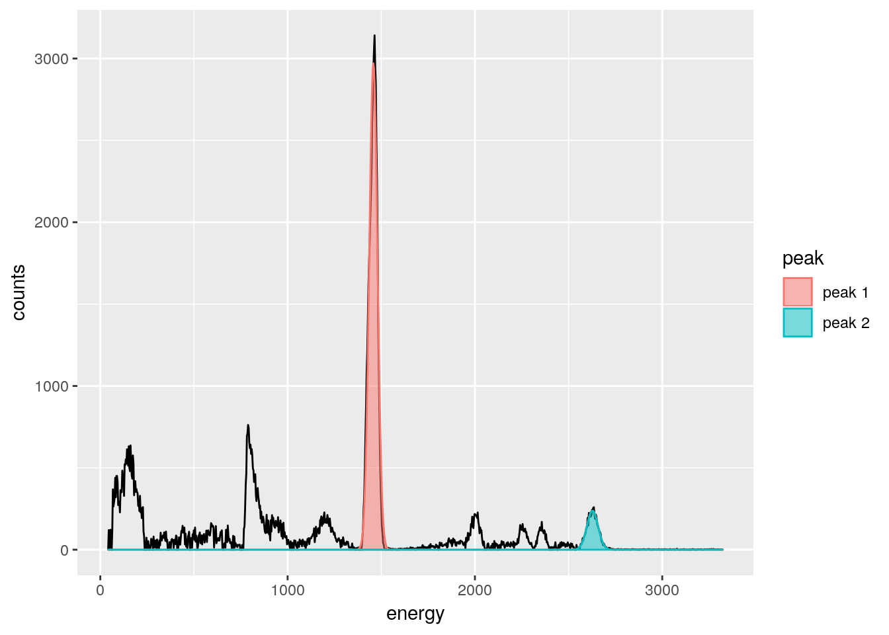
calib_scale <- lapply(X = calib_peaks, FUN = calibrateEnergy,
lines = c(238, 1461, 2614.5))
calib_scale <- methods::as(calib_scale, "GammaSpectra")
plot(calib_scale, yaxis = "rate") +
ggplot2::geom_vline(xintercept = c(238, 1461, 2614.5), linetype = 3) +
ggplot2::labs(x = "Energy [keV]", y = "Count rate [1/s]") +
ggplot2::theme_bw()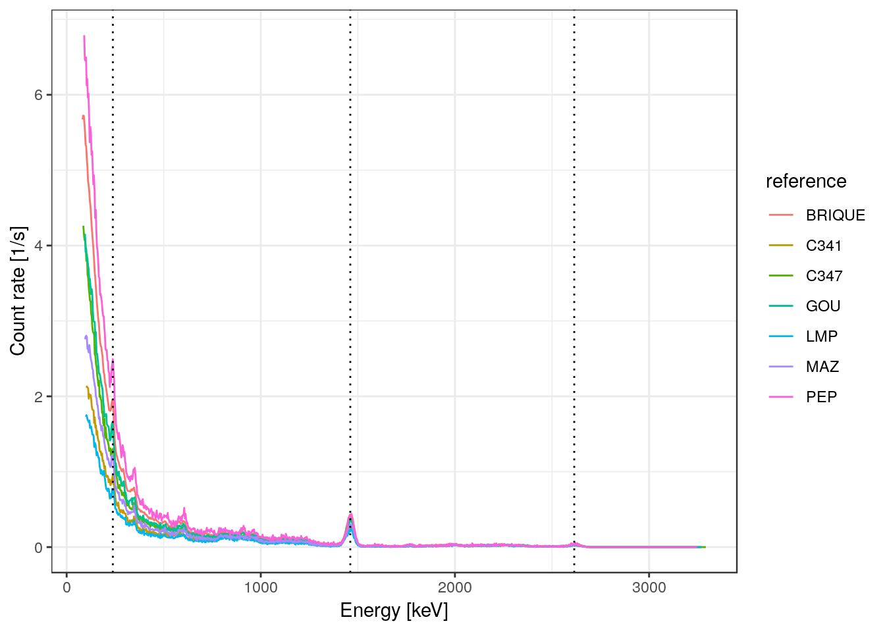
Le spectre pour la mesure de bruit est particulièrement bruité, la recherche automatique de pics ne peut pas aboutir. On va donc forcer les canaux a utiliser pour la calibration en énergie.
noise_lines <- data.frame(
chanel = c(76, 459, 816),
energy = c(238, 1461, 2614.5),
row.names = c("Pb", "K", "Cs")
)
noise_scale <- calibrateEnergy(crp2a_noise, lines = noise_lines)
plot(crp2a_noise, noise_scale) +
ggplot2::geom_vline(xintercept = c(238, 1461, 2614.5), linetype = 3) +
ggplot2::labs(x = "Energy [keV]", y = "Count") +
ggplot2::theme_bw()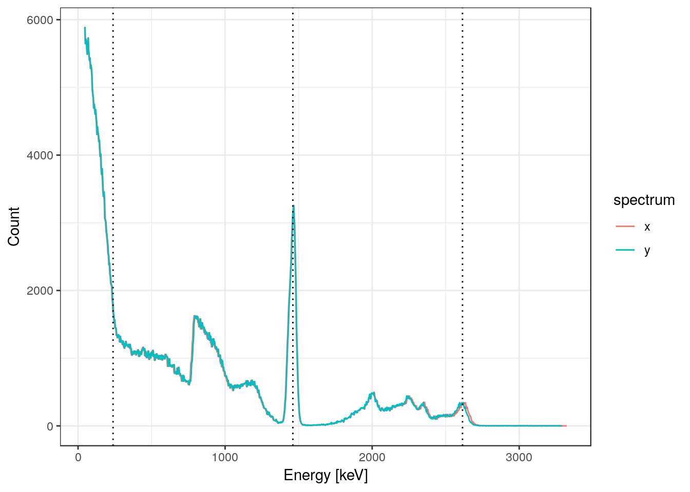
noise <- integrateSignal(crp2a_noise, range = c(165, 2800), noise = NULL,
NiEi = TRUE)
noise
#> value error
#> 25312.666466 1.663403signal <- integrateSignal(calib_scale, range = c(165, 2800), noise = noise,
NiEi = TRUE)
do.call(rbind, signal)
#> value error
#> BRIQUE 64016.54 4.88379
#> C341 27706.69 10.55482
#> C347 46228.26 14.35379
#> GOU 51842.40 12.48056
#> LMP 21066.11 10.24209
#> MAZ 37078.68 11.48740
#> PEP 80261.96 20.47382# Build calibration curve
crp2a_dose <- list(
BRIQUE = c(1986, 36),
C341 = c(850, 21),
C347 = c(1424, 24),
GOU = c(1575, 17),
LMP = c(642, 18),
MAZ = c(1141, 12),
PEP = c(2538, 112)
)
CRP2A <- calibrateDose(
crp2a_calib,
dose = crp2a_dose,
noise = noise,
range = c(165, 2800),
intercept = TRUE,
details = list(laboratory = "IRAMAT-CRP2A",
instrument = "InSpector 1000")
)
# Plot Calibration curve
plot(CRP2A) +
ggplot2::labs(x = "Signal", y = "Dose rate [µGy/y]") +
ggplot2::theme_bw()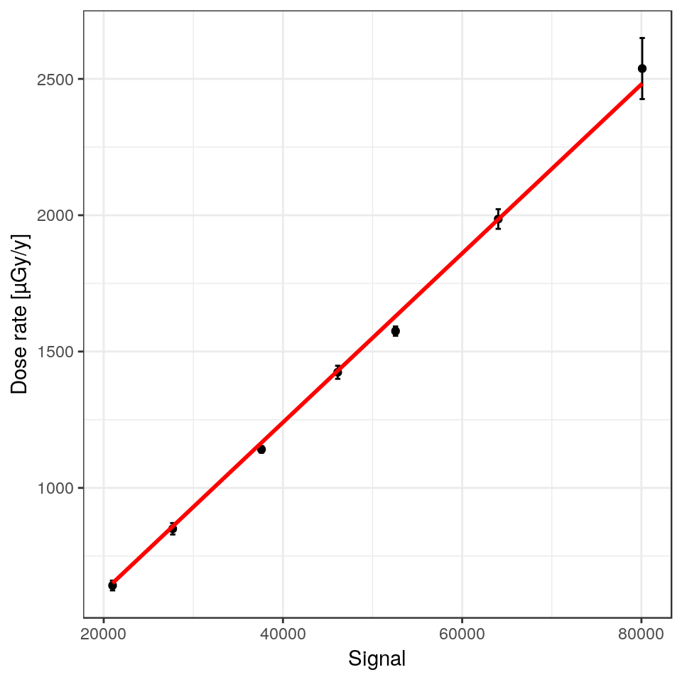
#>
#> Call:
#> stats::lm(formula = fit_formula, data = fit_data, weights = fit_weights)
#>
#> Residuals:
#> 1 2 3 4 5 6 7
#> -6.764 14.259 1.858 -52.674 20.079 -10.317 33.559
#>
#> Coefficients:
#> Estimate Std. Error t value Pr(>|t|)
#> (Intercept) -4.657e+01 3.066e+01 -1.519 0.189
#> signal 3.185e-02 6.043e-04 52.710 4.65e-08 ***
#> ---
#> Signif. codes: 0 '***' 0.001 '**' 0.01 '*' 0.05 '.' 0.1 ' ' 1
#>
#> Residual standard error: 30.54 on 5 degrees of freedom
#> Multiple R-squared: 0.9982, Adjusted R-squared: 0.9978
#> F-statistic: 2778 on 1 and 5 DF, p-value: 4.647e-08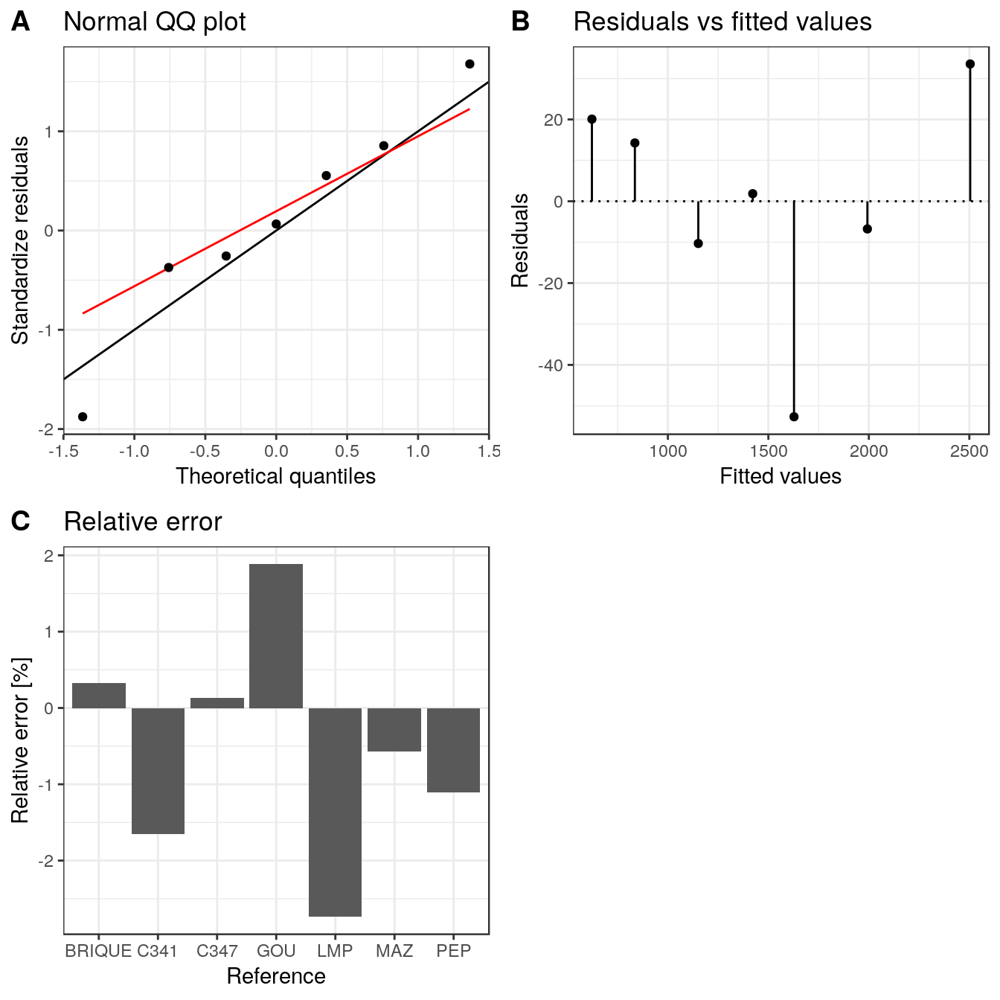
#> R version 3.5.3 (2019-03-11)
#> Platform: x86_64-pc-linux-gnu (64-bit)
#> Running under: Ubuntu 18.04.2 LTS
#>
#> Matrix products: default
#> BLAS: /usr/lib/x86_64-linux-gnu/blas/libblas.so.3.7.1
#> LAPACK: /usr/lib/x86_64-linux-gnu/lapack/liblapack.so.3.7.1
#>
#> locale:
#> [1] LC_CTYPE=fr_FR.UTF-8 LC_NUMERIC=C
#> [3] LC_TIME=fr_FR.UTF-8 LC_COLLATE=fr_FR.UTF-8
#> [5] LC_MONETARY=fr_FR.UTF-8 LC_MESSAGES=fr_FR.UTF-8
#> [7] LC_PAPER=fr_FR.UTF-8 LC_NAME=C
#> [9] LC_ADDRESS=C LC_TELEPHONE=C
#> [11] LC_MEASUREMENT=fr_FR.UTF-8 LC_IDENTIFICATION=C
#>
#> attached base packages:
#> [1] stats graphics grDevices utils datasets methods base
#>
#> other attached packages:
#> [1] magrittr_1.5 ggplot2_3.1.1 gamma_0.0.0.9001
#>
#> loaded via a namespace (and not attached):
#> [1] Rcpp_1.0.1 highr_0.8 compiler_3.5.3 pillar_1.3.1
#> [5] plyr_1.8.4 tools_3.5.3 digest_0.6.18 evaluate_0.13
#> [9] memoise_1.1.0 tibble_2.1.1 gtable_0.3.0 pkgconfig_2.0.2
#> [13] rlang_0.3.4 rstudioapi_0.10 commonmark_1.7 yaml_2.2.0
#> [17] pkgdown_1.3.0 xfun_0.6 rxylib_0.2.1 withr_2.1.2
#> [21] stringr_1.4.0 dplyr_0.8.0.1 roxygen2_6.1.1 xml2_1.2.0
#> [25] knitr_1.22 desc_1.2.0 fs_1.2.7 cowplot_0.9.4
#> [29] rprojroot_1.3-2 grid_3.5.3 tidyselect_0.2.5 glue_1.3.1
#> [33] R6_2.4.0 rmarkdown_1.12 tidyr_0.8.3 purrr_0.3.2
#> [37] backports_1.1.4 scales_1.0.0 htmltools_0.3.6 MASS_7.3-51.1
#> [41] assertthat_0.2.1 colorspace_1.4-1 labeling_0.3 stringi_1.4.3
#> [45] lazyeval_0.2.2 munsell_0.5.0 crayon_1.3.4